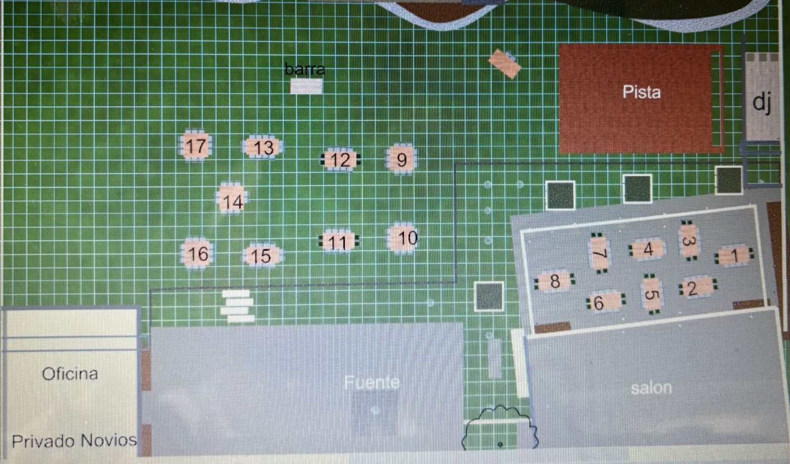

Layout Mesas
Ceremonia Religiosa 6:00 pm
Padrinos:
- Anillos: Patricia Guerra
Natividad Nava
- Lazo: Rosa María Chávez
Cesar De La O
Minerva Guerra
- Arras: Patricia Leos
Isidro Guerra
Biblia: Cesar De La O Chávez
Andrea Ocampo
- Rosario: Myrna Chávez
Hernando Valles
Recepción 9:00 pm
Padrinos:
- Musica: Isidro Guerra
Patricia Leos
- Pastel: Ana Aguilera
Adriana Molina
- Alcohol: Patricia De La O
Rene Veleta
- Fotografía: Myrna Chávez
Hernando Valles
- Decoración y Detalles: Elvia De La O
Juana Guerra
Idalia Villanueva
Francisco Narvaez
Adriana Guerra
Ricardo Ruíz